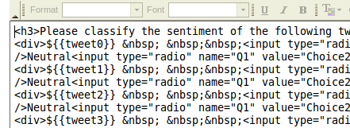

As you saw in lecture, there are many ways to attempt to control the quality of the data you receive from workers. There are several sites, CrowdFlower and ODesk to name a few, which differ from MTurk in that they enforce stricter quality requirements. In fact, CrowdFlower differentiates itself by doing exactly what we are going to do: embedding gold standard data into MTurk HITs. But we don't need no help from CrowdFlower. We will work within Mechanical Turk to get the quality standards we need all by ourselves. Like the ballers we are.
For this assignment, we will be using MTurk's online GUI interface to design our HITs and using CSV files to upload and download our data. Keep in mind that, should you want to use MTurk for more heavy-duty data processing in the future, there is an API which allows you much greater control over how your HITs operate. You can look into MTurk's command line tools, as well as the API interfaces that exist for basically every language under the sun.
TO DO
Preparing the data
First, we need to transform the data you collected and labeled in assignment 1 into data for MTurk HITs. Download our script for making this conversion. The code is documented line by line, so it should be easy to see what is happening. You will have to fill in a few lines in order for it to run. The script makes use of python's csv module to simplify the file IO, and the random module to choose the order in which to display the tweets. You should familiarize yourself with these modules if you have not yet seen them.
This code assumes you did the previous assignment correctly, and that you have a file called
tweets.csvwhich contains 1000 lines, 900 of which have two columns (tweetanduser) and 100 of which have three columns (tweet,user, andlabel). Since we want each of our HITs to present the Turker with 10 tweets to label, one of which will be a hidden quality control tweet for which we know the correct label, we want to generate a new CSV file which contains 100 lines, each of which corresponds to the data for one HIT. We will do this using 12 columns:tweet0...tweet9 control labelHere, the
controlcolumn will be an integer, indicating which of the tweets is the control. This method of bookkeeping* makes it easy for us to randomize the location of the control tweet. Inembed_controls.py, fill in the few lines of code (marked as TODO in the file) to generate a random location for the control and write the line to a CSV.*Fun fact: Bookkeeping is one of the only words in English with three consecutive pairs of repeated letters. Also, sweettooth. I learned this in third grade. It is valuable knowledge which I've never used.
Once you have completed the code, you can run the script in the command line:
$ python embed_controls.pyThis will generate a file called
tweets_with_controls.csv. Open it and check that it looks sensible.
Designing the HIT
Log onto MTurk as a requester
Click on
 and then choose "New Project"
and then choose "New Project" 
We will be using the "Other" option. You probably noticed that there is a "Sentiment" option (we never claimed that this assignment was original). Feel free to click through it and see how it is set up; nothing should look too different from what we will be doing. For a lesser person, this click-and-go option is perfectly sufficient. We, however, have standards to uphold, and so will not be using it since it does not allow us to add in our gold standard data.
Fill out the fields with titles, descriptions, etc. Check the "explicit content" box if relevent. (Oh God! Which company did you choose?) When you get to the "reward per assignment" and the "number of assignments per HIT" fields, we will be offering $.XX per HIT and assigning each HIT to Y Turkers.
Click on "Advanced" and "Worker Qualifications." Remove the "Master Qualification" requirement, and any other requirements that are listed. MTurk offers to screen workers for you, based on the number and types of HITs they have done in the past. In general, this is a good idea, but for this class, we are willing to face the wild west of of Mechanical Turk : Unfiltered.
In the next screen, you will see a frame where you can edit your HIT graphically, which is primed with examples of every possible button/menu/checkbox you could never need. You can delete most of this, it is just there for illustration. You are free to design your HIT however you want, using either the GUI editor or using your shiny CS degree to edit the html directly. Keep in mind what we have discussed in lecture about good HIT design. Keep things simple and clear.
You will need to encode variables into your HIT design, so that each HIT loads its data from a different line in your CSV file. On MTurk, you can denote variable fields using the syntax
${{VARIABLE_NAME}}. When being compiled, this field will be populated with a cell from your CSV file from the column headed byVARIABLE_NAME. You can read more about MTurk's conventions here. This syntax can be used either in the GUI or in the html, e.g.
 When you complete the design for your template and click finish, you should see your project listed next to a button that says "New Batch". Click this and upload your data,
tweets_with_controls.csv. Make sure the preview looks okay, and then you can publish your HITs.

Congrats! You can now sit back and watch the highly noisy data roll in. Under the "Manage" tab, you can keep track of how many of your HITs have been completed and can look at the results you are receiving. You should follow the progress of your HIT over the next week, but do not approve or reject anyone yet. This will be the subject of the next assignment. I know, I know, try to contain the excitement.